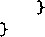

|
proc |
||
|
17 |
movswl |
28(%rsp),%eax |
|
18 |
movsbl |
31(%rsp),%edx |
|
19 20 |
subl cltq |
%edx, %eax |
|
21 |
movslq |
24(%rsp),%rdx |
|
22 |
addq |
16( 0 / 0 rsp) , %rdx |
|
23 |
imulq |
%rdx, °/ 0 rax |
|
2A 25 |
addq ret |
$32, %rsp |
Pass &x2 as eirgumen t ： Pass &x:l ,：as argument Compute &x4 Pass kx4 as argument
Pasvj.
Pass i
Pass
Pass
Pass
Call
Compute x3~x Sign extend
Compute xl+:x:2 Compute (xl+x2)*(x3~x4) Deallocate stack Irame Return
4 as argument x3 as argument 3 a.s argument 2 as argument 1 as argument
and con vert to and con vert to
long‘ int
图3»41a说明了在执行call_proc时，栈帧的建立。函数call一proc减小栈指针，在栈上 分配了 32个字节。它用字节16〜31来保存局部变量xl(字节16〜2f), x2(字节24〜27), x 3 (字 节28〜29)和(字节31)。这样的分配大小是由变量的类型决定的。字节30未使用。由于没 有足够的参数寄存器，栈帧的字节0〜7和8〜15用来保存call_proc的第7个和第8个参数。 虽然参数x 4 只需要一个字节，但还是为每个参数分配了 8 个字节。在call一proc的代码中我们 可以看到，为调用c.all_pr OC 所进行的初始化局部变量和建立参数（既有在寄存器中的，也有在 栈上的）的指令。在proc返回后，局部变量结合起来计算最后的表达式，结果在寄存器％rax中 返回。在ret指令之前，通过简单地增加栈指针，就释放了栈空间。
图3-41b说明proc执行时的栈。call指令将返回值压入栈中，所以在执行 C all_ proC 时，栈指针相对于它的位置向下移动 8 。因此，在proc的代码中，用距离栈指针偏移量为 8 和 16来访问参数7和8。
|
31 |
28 |
32 |
x4 |
x3 |
x2 |
||||
|
24 |
x4 |
x3 |
x2 |
24 |
xl |
||||
|
16 |
xl |
16 |
参数 8 |
||||||
|
栈指针 8 |
参数 8 |
栈指针 8 |
参数 7 |
||||||
|
%rsp ► 0 |
参数 7 |
%rsp ► 0 |
返回地址 |
||||||
a) 调用 proc 之前 b) 调用 proc 过程中
图3-41 call_proc的栈帧结构。帧要保存局部变量xl到以及proc的第7个和 第8个参数。在proc的执行过程中，桟指针向下移动8
可以观察到call_ P roc如何在执行过程中只改变了一次栈指针。GCC认为用32字节来保 存所有的局部变量和proc的多出来的参数就足够了。尽量减少栈指针的移动次数，简化了编译 器用相对于栈指针的偏移量产生对栈元素的引用的任务。
4.寄存器保存惯例
我们看到在IA32中（3.7.3节）有些用来保存临时值的寄存器被指定为调用者保存，函数可以 自由地覆盖这些寄存器的值；而另外一些是被调用者保存,函数在写这些寄存器之前，必须在栈 上保存它们的值。在X86-64中，指定为被调用者保存的寄存器有：%比父、％比 ？ 和％rl2〜％rl5。
有调用者保存的唯时寄存器吗
在16个通用目的寄存器中，我们看到有6个是用来传递参数，6个是由被调用者保存的 临时寄存器， 1 个（％rax)保存函数的返回值，还有 1 个（％rsp)作为栈指针，只剩下％rlO 和％ 111 是作为调用者保存的临时寄存器。当然，当参数少于 6 个或者当函数用完了参数时，就 可以使用参数寄存器了，而在产生出最终的结果之前，％rax可以重复利用。
我们用一个递归阶乘函数的某些不寻常的版本为例，说明被调用者保存寄存器的使用：
/ 本 Compute x! and store a.t re suit p */
void sfact.helper(long int x, long int *resultp)
{
if (x <= 1)
♦resultp = 1; else {
long int nresuit; sfact_helper(x~l, fenresult);
*resultp = x * nresult;

要计算值x的阶乘，这个函数的最顶层调用如下：
long int sf act (long int x)
■C
long int result; sfact^helper(x, &result); return result;
>
sfact_helper的x 86 _ 64 代码如下所示。
|
Arguments: |
x in Xrdi., resultp |
in Zrsi |
|
|
•1 |
sfact Jielper: |
||
|
2 |
movq |
%rbx, -16(%rsp) |
Save Zrbx (callee save) |
|
3 |
movq |
%rbp, -8(%rsp) |
Save %rbp (callee save) |
|
4 |
subq |
$40, %rsp |
Allocate 40 bytes on stack |
|
5 |
movq |
%rdi, %rbx |
Copy .x to 6 / 0 r'bx |
|
6 |
movq |
%rsi, %rbp |
Copy resultp to %rbp |
|
7 |
cmpq |
$1, %rdi |
Compare x;1 |
|
B |
jg |
.L14 |
If >, goto recur |
|
9 |
movq |
$1, (%rsi) |
Store 1 in *resultp |
|
10 |
卿 |
.L16 |
Goto done |
|
11 |
• L14: |
recur: |
|
|
12 |
leaq |
16(%rsp), %rsi |
Compute ^nresult as second argument |
|
B |
leaq |
-l(%rdi), %rdi |
Compute xml ~ x-l as ..first argi?. 出 ent |
|
14 |
call |
sfact_helper |
Call sfactjielper(xinl , &nresul i) |
|
15 |
movq |
%rbx, %rax |
Copy x |
|
16 |
imulq |
16(%rsp), %rax |
Compute x*nresult |
|
17 |
movq |
%rax, (%rbp) |
Store at resul tp |
|
18 |
• L16: |
done: |
|
|
19 |
movq |
24(°/ 0 rsp) , %rbx |
Restore %rbx |
|
20 |
movq |
32(%rsp), %rbp |
Restore %rbp |
|
21 |
addq |
$40, %rsp |
Deallocate stack |
|
22 |
ret |
Ret mm |
|
图342说明了 sfactjielper是如何用栈来存储被调用者保存寄存器的值,以及保存局部变 量nresult。这个实现有一个有趣的特性，它调用的两个被调用者保存寄存器(%rbxfP%rbp)被
保存在栈上（第 2 〜3行)，之后栈指针减少（第4行）以分配栈帧。因此，％rbx的栈编译量从开 始时的-16移到了最后的+24 (第19行)。类似地，％rbp的偏移量从一8移到了+32。
栈指针 n
存储 %rbp 存储 ％rbx
%rsp ^ 0
-8
-16
存储％ rt>p
栈指针减少之前
nresult
存储 ％rbx
+32 +24 +16 +8
找指针
%rsp 令 0
栈指针减少之后
图3-42函数sfactjielper的栈帧。该函数在保存某些状态之后，将栈指针减小
X86-64时一个不同寻常的特性是能够访问栈指针之外的存储器。它要求虚拟存储器管理系 统为这段区域分配存储器。X86-64 ABI [73]指明程序可以使用当前栈指针之外128字节的范围 (即低于当前找指针的值hABI将这个区域称为红 色地带 （redone),必须保持当栈指针移动时, 红色地带可读可写。
_练习题3.51对于C程序
long int local_array(int i)
{
long int a[4] = {2L, 3L, 5L, 7L>; int idx = i & 3; return a[icjx];
>
GCC产生如下代码：
x86-64 implementatj.on of local_array
|
1 |
Argument: i in tedi local_array: |
|
|
2 |
movq |
$2, -40(%rsp) |
|
3 |
movq |
$3, -32(%rsp) |
|
4 |
movq |
$5, ~24(%rsp) |
|
5 |
movq |
$7, -16(%rsp) |
|
6 |
andl |
$3, %edi |
|
7 |
movq |
-40(%rsp,%rdi,8), %rax |
|
8 |
ret |
|
画图说明这个函数使用的栈位置，以及它们相对于栈指针的偏移量。
为汇编代码添加注释 ， 描述每条指令的效果。
这个示例说明关于X86-64桟规则的什么有趣特性？
_练习题3.52对于递归阶乘函数 long int rfact(long int x)
{
if (x <= 0) return 1; else {
long int xml = x-1; return x * rfact(xml )；
>
GCC产生下面的代码…；
x86~64 implemntation • of reciwsife factorial f.ijjnctdoii rfact Argument x in Xrdi
rfact: pushq movq movl
%rbx
%rdi, %rbx $1, %eax %rdi, %rdi • Lll
-l(%rdi), %rdi rfact
%rbx, %rax %rbx
jle
leaq
call
imulq
Lll:
popq
ret
]]
12.
函数存储在％rbx中的是什么值？
p.ushq (第 2 行）和popq (年11行）扣岑是干仵么用的？
为汇编佚码漆加注释厂描邊每蔡指4齡敎果。 : •
•苁这个函数誉理栈帧啲方式与我们见过的其他方式有什么木同？
3:13,5数据结构 丨* 々
x86^64中数据结构遵循的原则与IA32的亡样 •: 数组是作为同样大小的块的序列来分配，这 些块中保存着数组元素；结构则作为变长的块来分配，块中保存着结构元素 ； 联合是作为一个单 独的块来分配，这个块足够大，能够装下联合中最大的元素。
区别是X86-64遵循一组更严格的对齐要求。对于任何需要尤字节的标量数据类型来说，它 的起始地址必须是尺的倍数。因此，数据类型long和double以及指针，都必须在 8 字节边 界上对齐。此外，数据类型long double使用16字节对齐（分配也是16个字节大小)，虽然 实际表示只需要 10 个字节。强加上这些对齐条件是为了提高存储器系统性能——最新的处理器 中，存储器接口被设计成读或者写对齐的块，这些块是8或者16字节长。
_练习题3.53对于下列结构声明，确定每个字段的偏移量，结构的整个大小，以及在X86-64下它的 对齐要求。
struct PI { int i; char c; long j; char d; >;
struct P2 { long i; char c; char d; int j; >;
struct P3 { short w [3] ; char c[3] };
struct P4 { short w[3] ; char*c[3] };
struct P3 { struct PI a [2] ; struct P2 *p };
3.13.6关于X86-64的总结性评论
将x 86 处理器带入新纪元的功臣是AMD和:GCC的作者。x 86 _ 64 硬件和编程规则的形 成改变了处理器，过去它严重依赖宇栈来保¥程序状态，现在则是将最常使用的状态部分保 存在更快并扩展了的寄存器组中。x 86 终于赶上了 2 0世纪S0年代早期RISC处理器提出的 理念！ . .
既能运行IA32代码又能运行X86-64代码的处理器变得越来越常见。现在许多桌面电脑和笔 记本系统都还是运行的它们操作系统的32位版本 ， 这也限制了这些机器只能运行32位应用。运 行64位操作系统的机器，由于其能够运行32位和64位应用，已经成为高端机器的普遍选择， 例如，数据库服务器和科学计算。将应用从32位转换成64位最大的缺陷是指针变量的大小翻倍 了，由于许多数据结构都包含指针，这也意味着总的存储器需求也几倍了。只有对内存需求 超过IA32的4GB地址空间限制的应用才执行这种32位到64位的转换。历史表明应用总是能变
得充分使用所有可得的处理能力和存储器大小，因此我们可以很放心地预测，运行64位操作系 统和应用的64位处理器会逐渐变得更普遍。
3.14 浮点程序的机器级表示
到目前为止，我们只考虑了表示整数以及对整数数据类型进行操作的程序。为了实现使用浮 点数据的程序，我们必须用一些方法来存储浮点数据，同时还要有额外的指令对浮点值进行操 作、在浮点和整数值之间进行转换，以及在浮点数之间进行比较。还需要规则定义如何传递作为 函数参数的浮点值，以及如何传递作为函数结果的浮点值。我们把存储模型、指令和传递规则的 组合称为机器的浮点体系结构。
由于x 86 处理器有很长的发展演变历史，它提供了多种浮点体系结构，目前有两种还在使 用。第一种，称为“x87”，可以追溯到早期的Intel微处理器，直到现在都还是标准的实现。第 二种，称为“SSE”，是基于较新的对x 86 处理器增加多媒体应用的支持。
网络旁注ASM : X87 X87的浮点体系结构
历史上的x87浮点体系结构是x87体系结构中最不优雅的特性之一。在原来的Intel机器中， 浮点计算是由一个独立的协处理器完成的。协处理器是一个具有自己的寄存器和执行一组指令的 处理能力的单元。这个协处理器用一个独立的芯片实现，称为8087、80287和i387,分别同处 理器芯片8086、80286和i386配套，因而俗称“x87”。所有的x86处理器都支持x87体系结构， 因此编译浮点代码的时候一直可以用它作为可能的目标。
x87指令在一个很浅的浮点寄存器栈上运行。在栈模型中，有些指令从存储器读出值，再压 入栈中；另一些指令从栈中弹出操作数，执行一个操作，然后把结果压入栈中；还有一些从栈中 弹出值，再把它们存到存储器中。这种方法的好处就是有;f艮简单的算法能使编译器将算术表达式 求值映射到栈代码中。
现代编译器能够做;(艮多并不适用于栈模型的优化，例如，多次使用一个计算出来的结果。结 果，x87体系结构实现了一个>(艮奇特的栈模型和寄存器模型的混合，这里栈的不同元素可以显式 地读和写，同时也可以通过压入和弹出来向上或者向下移动。此外，x87的栈被限制为深度不能 超过 8 个值；当压入多于 8 个值时，；!艮简单地，栈底的元素会被丢弃。因此，编译器必须记录栈 的深度。此外，编译器必须将所有的浮点寄存器都当作调用者保存，因为如果其他的过程向栈中 压入更多的值时，它们的值可能会从栈底消失。
网络旁注ASM:SSE SSE浮点体系结构
SSE2指令集，从Pentium4开始，增加了对多媒体应用的支持，成为编译C代码的一种可行的 浮点体系结构。与x87的基于栈的体系结构不同，基于SSE的浮点使用了;f艮直接的基于寄存器的方 法，对于优化编译器来说，是一个更好的目标。使用SSE2,除了它使用的是一组不同的寄存器和指 令之外，浮点代码类似于整数代码。当为X86-64进行编译时，GCC产生SSE代码。另一方面，对于 IA32,它默认产生x87代码，但是也可以通过适当的命令行参数设置，指示它产生SSE代码。
3.15 小结
在本章中，我们窥视了C语言提供的抽象层下面的东西，以了解机器级编程。通过让编译器 产生机器级程序的汇编代码表示，我们了解了编译器和它的优化能力，以及机器、数据类型和指 令集。在第5章，我们会看到，当编写能有效映射到机器上的程序时，了解编译器的特性会有所 帮助。我们还更完整地了解了程序如何将数据存储在不同的存储器区域中。在第 12 章会看到许多 这样的例子，我们需要知道一个程序变量是在运行时栈中，是在某个动态分配的数据结构中，还
是在某个全局存储位置中。理解程序如何映射到机器上，会让理解这些存储之间的区别容易一些。
机器级程序和它们的汇编代码表示，与C程序的差别很大。在汇编语言程序中，各种数据 类型之间的差别很小。程序是以指令序列来表示的，每条指令都完成一个单独的操作。部分程序 状态，如寄存器和运行时栈，对程序员来说是直接可见的。本书仅提供了低级操作来支持数据处 理和程序控制。编译器必须用多条指令来产生和操作各种数据结构，来实现像条件、循环和过程 这样的控制结构。我们讲述了 C语言和如何编译它的许多不同方面。我们看到C语言中缺乏边 界检查，使得许多程序容易出现缓冲区溢出。虽然最近的运行时系统提供了安全保护，而且编译 器帮助使得程序更安全，但是这已经使许多系统容易受到入侵者的恶意攻击。
我们只分析了 c到IA32和X86-64的映射，但是大多数内容对其他语言和机器组合来说也 是类似的。例如，编译C++与编译C就非常相似。实际上，C++的早期实现就只是简单地执行 了从C++到C的源到源的转换，并对结果运行C编译器，产生目标代码。C++的对象用结构来 表示，类似于C的struct。C++的方法是用指向实现方法的代码的指针来表示的。相比而言， Java的实现方式完全不同。Java的目标代码是一种特殊的二进制表示，称为Java字节代码。这 种代码可以看成是虚拟机的机器级程序。正如它的名字暗示的那样，这种机器并不是直接用硬 件实现的，而是用软件解释器处理字节代码，模拟虚拟机的行为。另外，有一种称为及时编译 (just-in-time compilation)的方法，动态地将字节代码序列翻译成机器指令。当代码要执行多次 时（例如在循环中），这种方法执行起来更快。用字节代码作为程序的低级表示，优点是相同的 代码可以在许多不同的机器上执行，而本章谈到的机器代码只能在x 86 机器上运行。
参考文献说明
Intel和AMD提供了关于他们处理器的大量文档。包括从汇编语言程序员角度来看硬件的概 貌[2，27],还包括每条指令的详细参考[3, 28, 29]。读指令描述很复杂，原因是1)所有的文 档都基于Intel汇编代码格式， 2 )由于不同的寻址和执行模式，每条指令都有多个变种，3)没 有说明性示例。不过这些文档仍然是有关每条指令行为的权威参考。
组织amd64 . org负责定义运行在Linux系统上的x86-64代码的应用二进制接口 (Applicatioin Binary Interface, ABI) [73]。这个接口描述了一些细节，包括过程链接、二进制代 码文件和大量的为了让机器代码程序正确运行所需要的其他特性。
正如我们讨论过的那样，GCC使用的ATT格式与Intel文档中使用的Intel格式和其他编译 器（包括Microsoft编译器）使用的格式都不相同。Blum的书[9]是为数不多的基于ATT格式的 参考书之一，它提供了大量的描述关于如何用asm命令在C程序中嵌入汇编代码。
Muchnick的关于编译器设计的书[76]被认为是关于代码优化技术最全面的参考书。它涵盖 了许多我们在此讨论过的技术，例如寄存器使用规则，基于循环代码的do-while形式产生代 码的优点。
已经有很多文章是关于缓冲区溢出通过因特网来攻击系统的。关于19.88年因特网蠕虫 Spafford出版了详细分析[102],并且帮助阻止传播的MIT团队成员也出版了一些论著[40]。从 那以后，大量的论文和项目提出了各种创建和阻止缓冲区溢出攻击的方法。Seacord的书[94]提 供了关于缓冲区溢出和其他一些对C编译器产生的代码进行攻击的丰富信息。
家庭作业
*3.54 —个函数的原型为
int decode2(int x, int y, int z);
将这个函数编译成IA32汇编代码。代码体如下：
x at %ebp+S, y at %ebp+i2, z at %ehpfl6
|
1 |
movl |
16(%ebp), %edx |
|
2 |
subl |
12(%ebp), %edx |
|
3 |
movl |
%edx, %eax |
|
•4 |
sail |
$15, %eax |
|
5 |
sari |
$15, %eax |
|
6 |
xorl |
8(%ebp), %edx |
|
7 |
imull |
%edx, %eax |
|
参数 |
x、y 和 2 |
: 存放在存储器中相对于寄存器％ 66? 中地址偏移量为 8 、 12 和 16 的地方。代码将返 |
回值存放在寄存器％eax中。
写出等价于我们汇编代码的decode2的C代码。
*3.55
下面的代码计算x和y的乘积，并将结果存放在存储器中。数据类型11_七被定义为等价于long long。 typedef long long ll_t;
void store_prod(ll__t *dest, ll_t x, int y) {
*dest = x*y;
>
GCC生成下面的汇编代码实现计算：
dest at %ebp 十 S, x at %ebp-f22, ;/ at %ebp+20
|
1 |
movl |
12(°/ 0 ebp) , %esi |
|
2 |
movl |
20(%ebp), %eax |
|
movl |
%eax, %edx |
|
|
sari |
$31, %edx |
|
|
5 |
movl |
°/ 0 edx, %ecx |
|
6 |
imull |
%esi, %ecx |
|
7 |
movl |
16(%ebp), %ebx |
|
8 |
imull |
%eax, %ebx |
|
9 |
addl |
%ebx, %ecx |
|
10 |
mull |
%esi |
|
11 |
leal |
(%ecx,%edx), %edx |
|
12 |
movl |
8(%ebp), %ecx |
|
13 |
movl |
%eax, (%ecx) |
|
14 |
movl |
%edx, 4(%ecx) |
**3.56
这段代码用了三个乘法来实现多精度运算，这个多精度运算是在32位机器上实现64位运算所需 要的。描述用来计算这个乘积的算法，并对汇编代码添加注释，说明它是如何实现你的算法的。 提示：参考练习题3.12及其答案。
|
考虑下面的汇编代码 ： |
||
|
x at %ebp+8, |
n at %ebp+12 |
|
|
1 |
movl |
8(%ebp), %esi |
|
2 |
movl |
12(7„ebp), %ebx |
|
3 |
movl |
$1431655765, %( |
|
A |
movl |
$-2147483648, ： |
|
5 |
.L2: |
|
|
6 |
movl |
%edx, %eax |
|
7 |
andl |
%esi, %eax |
|
8 |
xorl |
%eax, %edi |
|
9 |
movl |
%ebx, %ecx |
|
10 |
shrl |
%cl, %edx |
n testl %edx , %edx
jne .L2
movl %edi, %eax
以上代码是以下整体形式的C代码编译产生的：
int loop(int x, int n)
{
int result = ;
int mask;
for (mask = — ; mask ; mask = ) {
result 一： ............ ;
}
return result;
>
你的任务是填写这个C代码中缺失的部分，得到一个程序等价于产生的汇编代码。回想一下，这个 函数的结果是在寄存器％63乂中返回的。你会发现以下工作很有帮助：检查循环之前、之中和之后 .的汇编代码，形成一个寄存器和程序变量之间一致的映射。
哪个寄存器保存着程序值x、n、result和mask ?
result和mask的初始值是什么？
mask的测试条件是什么？
mask是如何被修改的？
、 E. result是如何被修改的？
F.填写这段C代码中所有缺失的部分。
**3.57在3.6.6节，我们查看了下面的代码，作为使用条件数据传输的一种选择：
int cread(int *xp) {
return (xp ? *xp : 0);
>
我们给出了使用条件传送指令的一个尝试实现，但是认为它是不合法的，因为它试图从一个空地址 读数据。
写一个C函数cread—alt,它与cread有一样的行为 ， 除了它可以被编译成使用条件数据传送。当 用命令行选项，-march=i686，来编译时，产生的代码应该使用条件传送指令而不是某种跳转指令。 **3.58下面的代码是在一个开关语句中根据枚举类型值进行分支选择的例子。回忆一下，C语言中枚举类 型只是一种引入一组与整数值相对应的名字的方法。默认情况下，值是从0向上依次赋给名字的。 在我们的代码中，省略了与各种情况标号相对应的动作。
/* Enumerated type creates set of constants numbered 0 and upward */ typedef enum {M0DE_A , M0DE_B, M0DE_C , M0DE_D , M0DE_E} mode_t;
int switch3(int *pl, int *p2, mode_t action)
{
int result = 0; switch(action) { case M0DE_A:
case M0DE_B:
case M0DE_C: